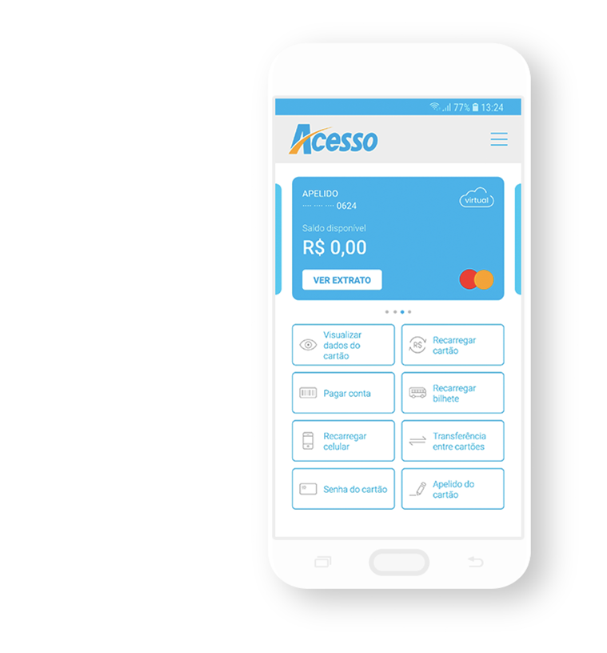

Through the time I was working in Acesso one of my tasks was to improve the mobile app. Together with the UX team, I decided that it would be great to create a chat area to better distribute the demands of the customer service department and to improve the user experience. Here I will share some parts of this challenge.

My main task was to design a great user experience in this new chat area. This is a very delicate area and I needed to create a simplistic however engaging experience where users could easily open tickets and had their problems solved. Acesso's interface was new and people were already using the app, so I needed to follow its Style Guide as well.
Firstly I decided to talk to one of the customer service team members to better understand what they were expecting from this new feature. Here are some points made in the talk.
The fast way to solve user's problems was to have documents or payment proof so they can easy communicate with other departments.
The subjects needed to be organized in categories for monthly reports.
Costumer service can only reply messages during working hours. Thus users need to be able to send messages when the chat is offline.
Looking back to the user's point of view we decided to take a small online survey. In this research I asked them to tell us about their biggest problems related to Acesso's app. I also added some small but relevant things to improve their experience:
To help users solve their problems a list with most frequent topics will be shown before they start the chat. The chosen topic is then shown to the operator.
The user will be able to see what messages were received and seen by the customer service member.
Modals were added so the user won't leave the chat or send documents without a confirmation.
When something goes wrong in the chat the user will be notified and redirected to another communication channel.
When the chat is crowded, users will be shown their position in the waiting list. With this functionality users won't get frustrated.